Both testing devices and proctor devices must be restarted the morning of each test session. Not sleep, not close-the-lid — a full restart. This clears background processes that can interfere with TestNav's kiosk mode and prevents the majority of mid-test crashes.
Students will be testing on Chromebooks or MacBooks this year. The setup steps differ slightly for each — see the device-specific instructions in Sections 2 and 4 below.
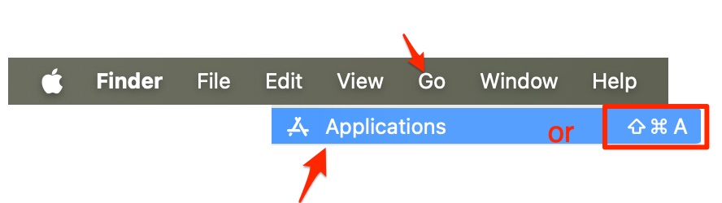
MAC USERS: To get to the Applications folder, click on your Desktop to enter the "Finder" mode, then either press Command-Shift-A, or click on the "Go" menu, then choose "Applications." Now find the TestNav app. You can press "T" to jump down to apps that start with the letter T.
Do not let students search for "TestNav" in a browser. If the app is missing from a device, Google will take them to the TestNav website, which looks legitimate and will let them sign in — but it is not the correct testing environment and their session will not count. If any device is missing the TestNav application, contact the tech team immediately rather than using the website.
Students may see a prompt asking to allow access to the camera and microphone. They must click Allow. Only the microphone is used during the assessment — the camera is not — but the prompt may mention both. If a student denies access, TestNav may not allow the test to proceed, and fixing it requires going into the device's settings, which significantly delays testing.
If you or a student are missing a device or headphones, resolve this first thing in the morning — do not wait until testing is about to start. The tech office is open for walk-ins from 8:00 to 8:35 AM on testing days for loaner devices and headphone pickups. Send students who need headphones or a loaner device during this window. If you need extra headphones for your class, email ogstechsupport@ogschool.org ahead of time so they can be ready for you.
Once testing begins (after 8:35 AM), the tech team will be moving throughout the building assisting classrooms. If you need tech help, email ogstechsupport@ogschool.org with a brief description of the issue, your room number, and the student's name. Do not send students to the tech office — no one will be there. Do not text.
Remind students to charge their devices fully the night before each testing day and to bring their headphones (required for ELA). Please ask students to verify devices and headphones are working prior to testing (before 8:35 AM). A dead battery or missing headphones mid-test delays the entire class.
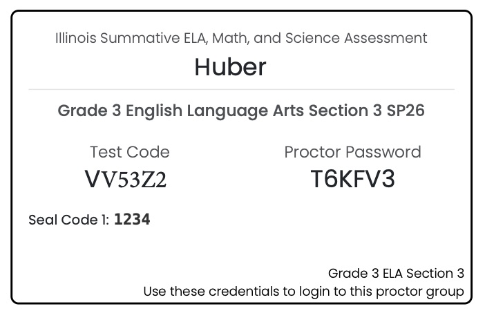
Restart the device. A full restart, not just sleep or closing the lid.
Launch TestNav.
Select the correct customer. Click the icon in the top-right corner, choose "Choose a different customer," then select Illinois.
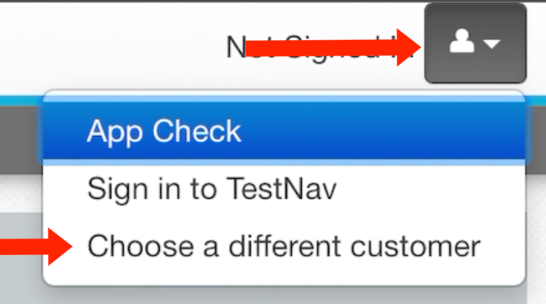
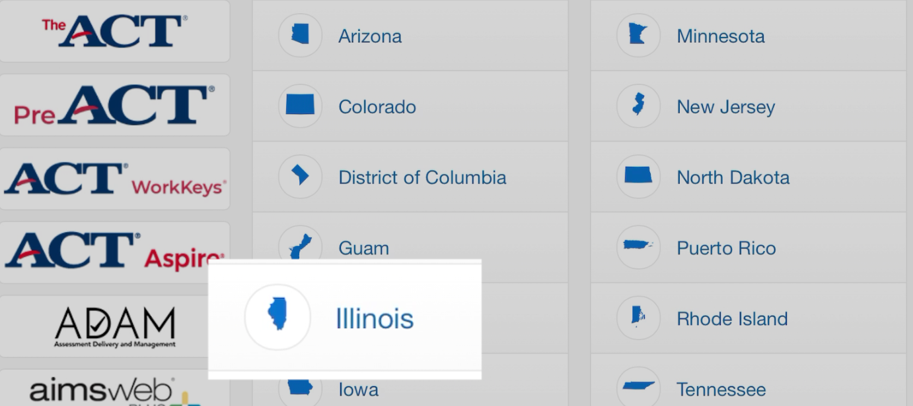
Test audio and microphone. Students may see a prompt to "allow access to camera and microphone" — they should click Allow. (Only the microphone is used, but the prompt may mention both.)
Go to il.adamexam.com/#/proctor on your proctor computer.
Enter the Test Code and Proctor Password from your proctor card. Click Submit, then Confirm.
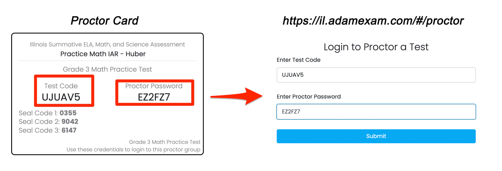
Enter your first and last name, check the "I Agree" box on the Proctor Acknowledgment, and click Save.
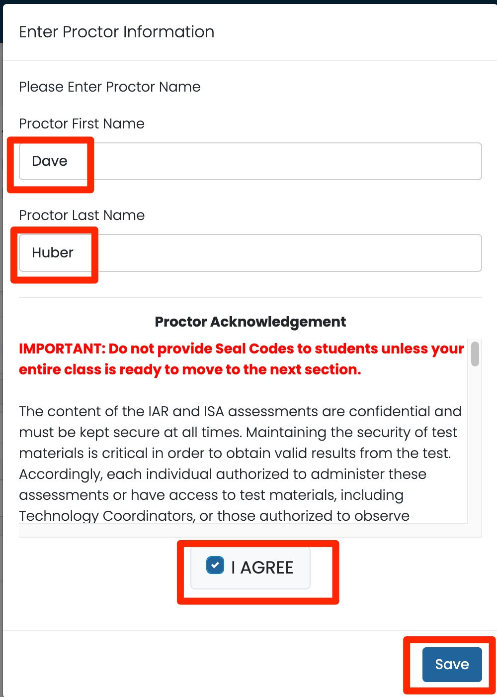
You're now in the proctoring platform. Display the Test Code for students — write it on the board or use the Display button in the top-right corner to project it.
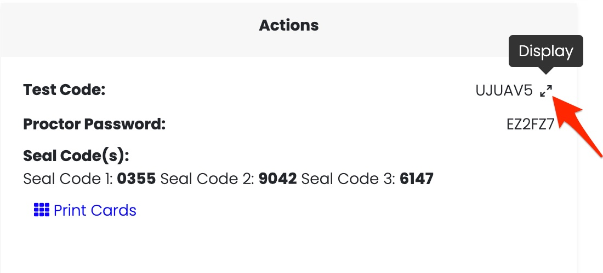
Each proctor must access the testing platform using their own individual account. Sharing login credentials violates the Pearson security agreement and creates a security risk.
Student privacy reminder: When contacting Pearson Support or ISBE about a student issue, provide only the 9-digit Student State ID. Do not include student names, gender, or other personally identifiable information.
Students restart their devices, then launch TestNav:
Students enter the Test Code displayed on the board.
Students enter their last name and state identifier from their testing ticket, then click Confirm.
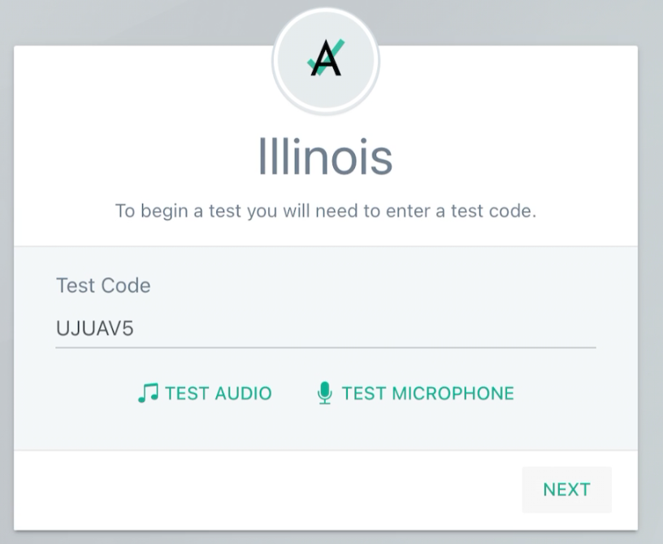
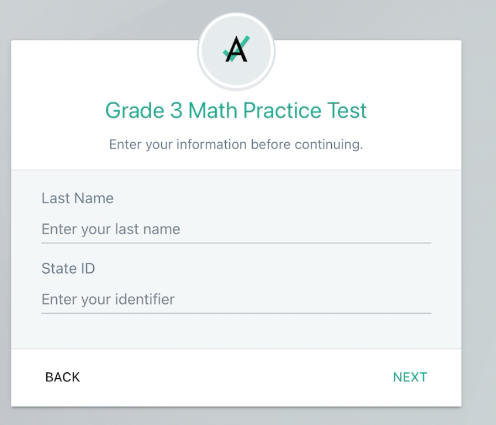
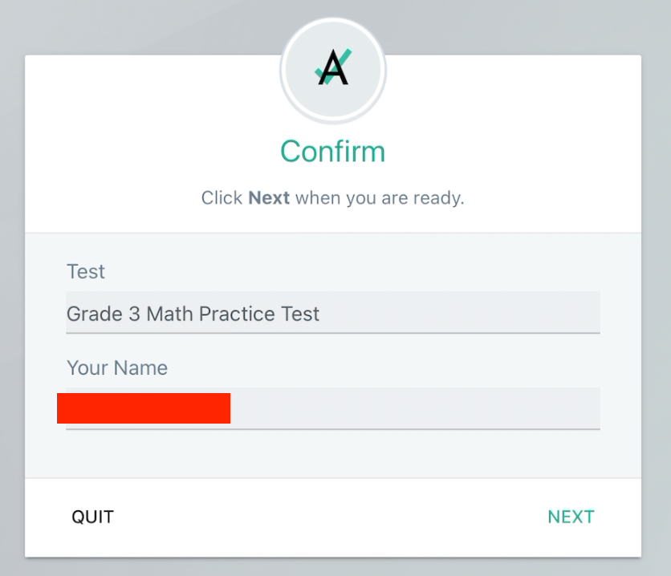
On your proctor dashboard, press Refresh (or enable Auto Refresh) until all students appear with a "Needs Attention" status. The page does not update in real time.
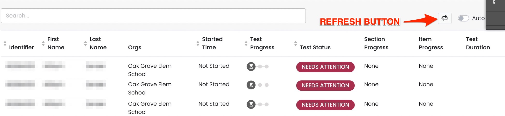
Once all students appear in the list, go to Group Actions and click "Approve All Sessions", then confirm.
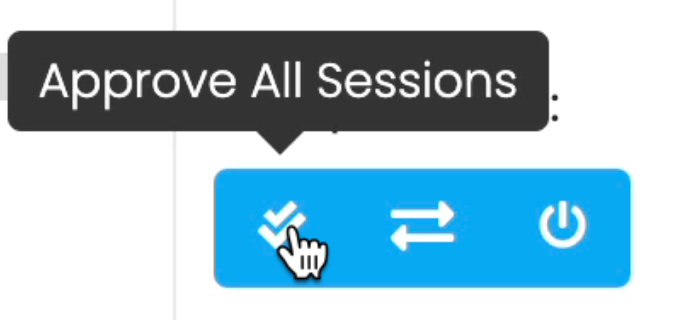
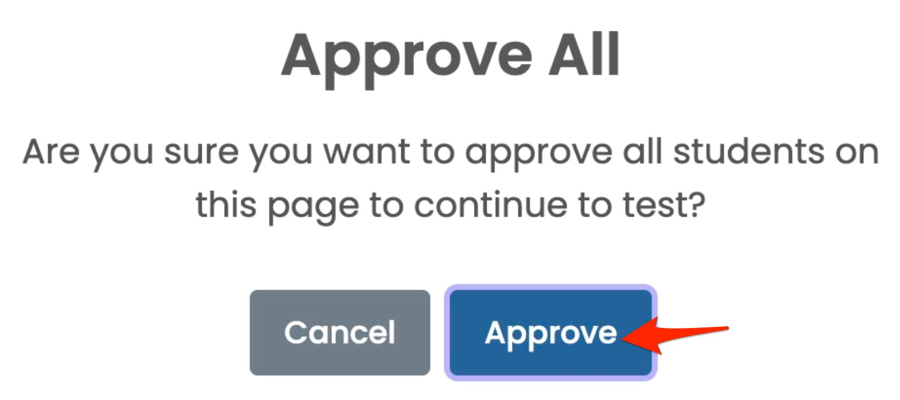
Student devices will enter kiosk mode (locked to TestNav).
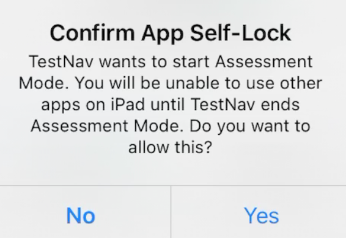
Provide the Seal Code for the current section. Display it on the board or read it aloud.
Monitor progress using the Refresh button. You can track Section Progress, Item Progress, and Test Duration for each student.
When all students have submitted their section, go to Group Actions and click "Exit All Sessions."
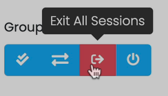
Students can now quit TestNav.
Repeat this entire process for each remaining section of the IAR until the assessment is complete.
Each test has its own proctor card with its own Seal Codes. You will proctor three separate tests this year:
| Section | Seal Code |
|---|---|
| Section 1 | Seal Code 1 |
| Section 2 | Seal Code 2 |
| Section | Seal Code |
|---|---|
| Section 3 | Seal Code 1 |
| Section | Seal Code |
|---|---|
| Section 1 | Seal Code 1 |
| Section 2 | Seal Code 2 |
| Section 3 | Seal Code 3 |
Calculators are built into TestNav — students do not need a physical calculator. The type available depends on the grade:
| Grade(s) | Calculator Type | Sections |
|---|---|---|
| 3–5 | Accommodation only (4-function w/sq. root & percentage) | 1, 2, 3 |
| 6–7 | 4-function w/sq. root & percentage | 1, 2, 3 |
| 8 | Scientific | 2 & 3 |
These are the statuses you'll see on the proctor dashboard:
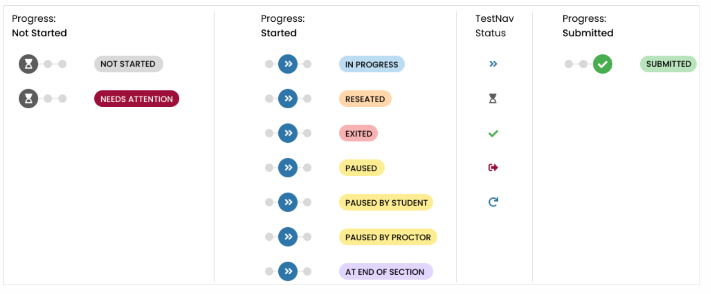
If a student is exited from the test for any reason — accidental exit, a crash, or a "Session in Use" message — you can get them back in. This is the most common issue during testing.
Tell the student to stop and wait. Don't let them try to log back in yet.
Refresh your proctor dashboard so all student statuses are current.
Click the three-dot menu (⋮) next to the student's name and select "Reseat Session." Confirm when prompted.
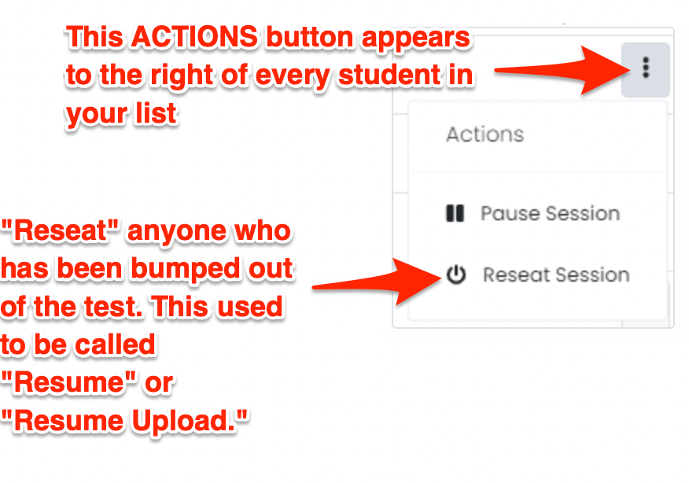
Wait for the dashboard to show "Reseat" status for that student. Refresh again if needed.
Now tell the student to log back into TestNav. After logging back in, the student must click Refresh in TestNav. Their test will resume where they left off.
Last resort: Hard shutdown. If the student's screen is completely frozen or locked and nothing responds, press and hold the power button until the device shuts off completely. Student answers are automatically saved — no work will be lost. After the device restarts, follow steps 1–5 above to reseat the student and get them back into the test.
If the issue can't be resolved with the steps above, email ogstechsupport@ogschool.org with a brief description of the problem, your room number, and the student's name. Do not send students to the tech office — tech staff are circulating throughout the building during testing. Do not text.